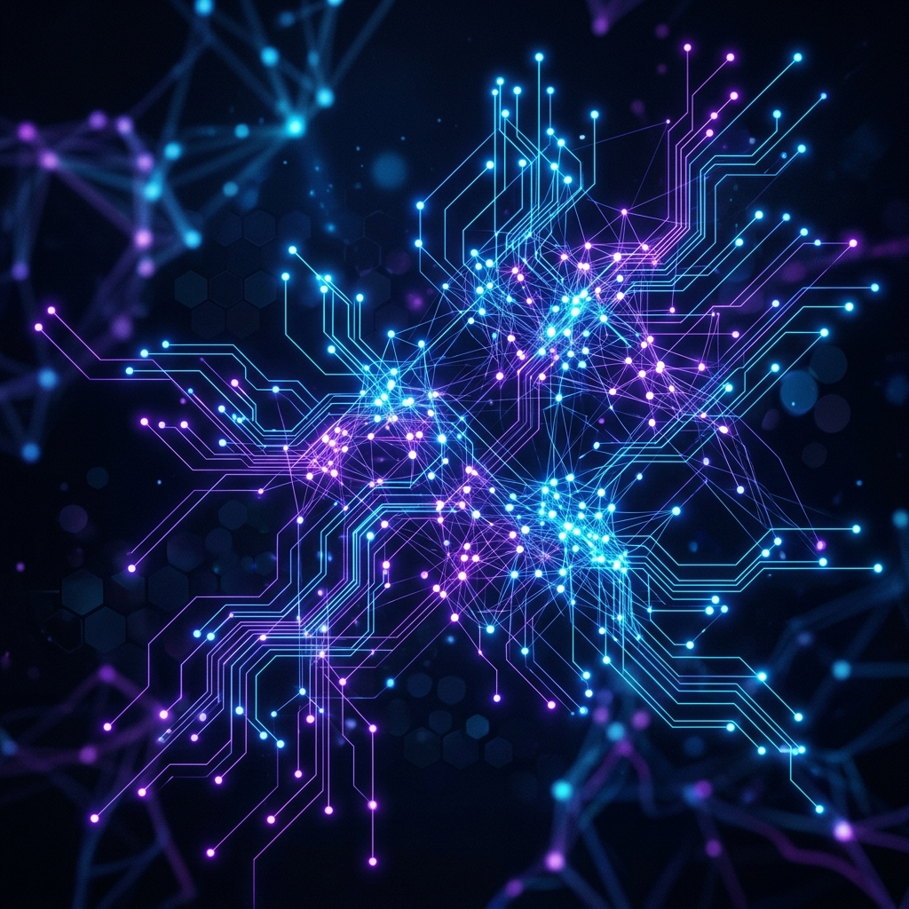

Välkommen till Framtiden
Hej! Mitt namn är Milo och detta är mitt slutprojekt i webbutveckling 1. Jag har valt att dedikera denna website till ett av de mest fascinerande ämnena i vår tid: Artificiell Intelligens (AI).
Varför just AI? Jo, eftersom maskininlärning och smarta agenter i rasande fart håller på att skriva om spelreglerna för vår mänskliga existens. Oavsett om det handlar om att generera fantastisk konst, hjälpa läkare att hitta sjukdomar, eller till och med skriva kod – så utgör AI ett gigantiskt kliv i vår tekniska evolution.
På denna sida kommer jag att ta med dig på en resa från historiens tidiga datamaskiner hela vägen in i en potentiell sci-fi framtid. Häng med!

Vad handlar sidan om?
Här kan du lära dig mer om artificiell intelligens ur flera olika perspektiv. Använd menyn längst upp för att läsa om Historiken bakom tekniken, hur den används i Nutid, hur Tekniken faktiskt fungerar (vad är egentligen ett neuralt nätverk?), och vad vi kan förvänta oss av Framtiden.
Du hittar även videomaterial under Media och en FAQ där vi besvarar de vanligaste frågorna om AI. Trevlig läsning!